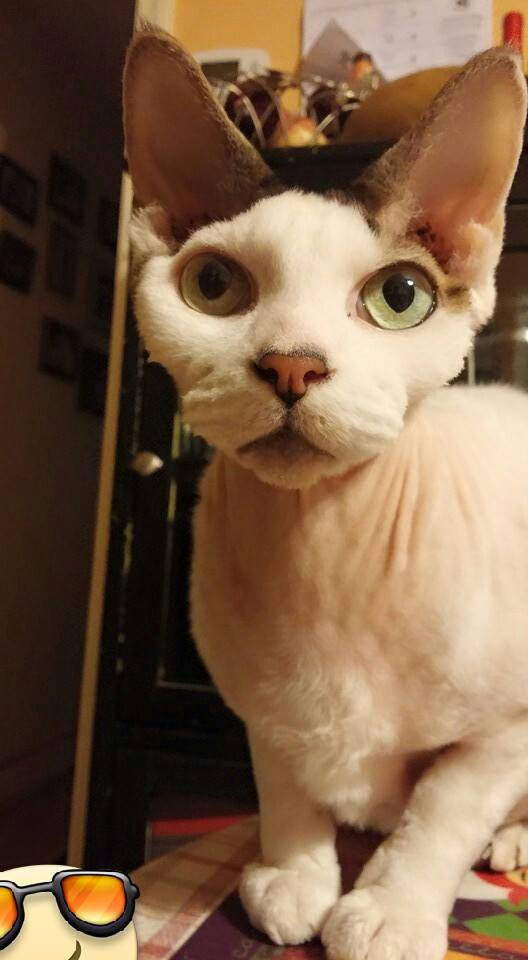

What is a Sphynx?
The Sphynx cat is a breed of cat known for its lack of coat (fur). Hairlessness in cats is a naturally-occurring genetic mutation; however, the Sphynx cat, as a breed, was developed through selective breeding, starting in the 1960s.[1][2] The skin should have the texture of chamois leather, as it has fine hairs, or the cat may be completely hairless. Whiskers may be present, either whole or broken, or may be totally absent. The cats have a narrow, long head, and webbed feet. Their skin is the color that their fur would be, and all the usual cat markings (solid, point, van, tabby, tortie, etc.) may be found on the Sphynx cat's skin. Because they have no fur they lose more body heat than coated cats; this makes them warm to the touch, and prone to finding warm places.
Breed Standards
These breed standards are defined by The International Cat Association (TICA)
• Wedge-shaped heads with prominent cheekbones
• Large, lemon-shaped eyes
• Very large ears with no hair on inside, but soft down on outside base
• Well-muscled, powerful neck of medium length
• Medium length torso, barrel-chested, and full, round abdomen, sometimes called a pot belly
• Paw pads thicker than other cats, giving the appearance of walking on cushions
• Whiplike, tapering tail from body to tip, (sometimes with fur all over tail or a puff of fur on the tip, like a lion)
• Muscular body

Behavior
Sphynx are known for their extroverted behavior. They display a high level of energy, intelligence, curiosity, and affection for their owners.[5] They are one of the more dog-like breeds of cats, frequently greeting their owners at the door and friendly when meeting strangers.
Health Issues
The Canadian Sphynx face challenges because of their lack of protective fur, skin cancer may be a problem if exposed to sunlight for long durations of time.
The lack of hair can cause health issues with kittens in the first weeks of life because of susceptibility to respiratory infections. Reputable breeders should not let their kittens go to new homes without being at least 14 weeks of age to ensure the kitten is mature enough to cope in a new environment.
Care
Though Sphynx cats lack a coat to shed or groom, they are not maintenance-free. Body oils, which would normally be absorbed by the hair, tend to build up on the skin. As a result, regular bathing is usually necessary weekly or bi-weekly.[15] Care should be taken to limit the Sphynx cat's exposure to outdoor sunlight at length, as they can develop sunburn and skin damage similar to that of humans. In general, Sphynx cats should never be allowed outdoors unattended, as they have limited means to conserve body heat when it is cold. In some climates, owners provide coats or other clothing in the winter to help them conserve body heat.
While they lack much of the fur of other cat breeds, Sphynxes are not necessarily hypoallergenic. Allergies to cats are triggered by a protein called Fel d1, not cat hair itself. Fel d1 is a protein primarily found in cat saliva and sebaceous glands. Those with cat allergies may react worse to direct contact with Sphynx cats than other breeds; even though reports exist that some people with allergies successfully tolerate Sphynx cats, they are fewer than those who have allergic reactions, according to David Rosenstreich, MD, the director of the Division of Allergy and Immunology at the Albert Einstein College of Medicine and Montefiore Medical Center in the Bronx, New York City, New York.[17] These positive reports may be cases of desensitizing, wherein the "hairless" cat gave the owner optimism to try to own a cat, eventually leading to the positive situation of their own adaptation.s
Sphynx cats can also have more ear wax than most hairy domestic cats because they have little to no hair in their ears. Dirt, skin oils (sebum), and ear wax accumulates in the ears, and needs to be cleaned out[18] on a weekly basis, usually before bath time.
The Sphynx breed also tends to accumulate oils and debris under their nails as well as the skin fold above the nail due to the lack of fur, so, like the ears, the nails and surrounding skin folds need to be cleaned properly as well.[19] Due to these factors the breed may require more grooming than a typical domestic cat with fur. Specialty products for this cat have been developed, though they still require more grooming than most breeds.
s